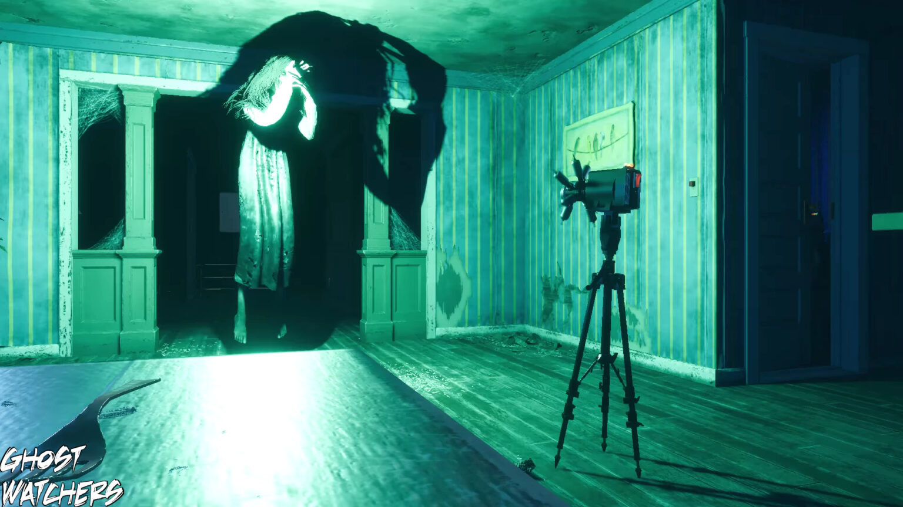

Но сначала уточним системные требования:
Минимальные
ОС: Windows 10
Процессор: Intel i5 or AMD equivalent (AMD FX 8500+ Series)
Оперативная память: 4 GB ОЗУ
Видеокарта: 2 GB Video RAM
DirectX: Версии 10
Место на диске: 8 GB
Рекомендованные
ОС: Windows 10
Процессор: Intel i5 or AMD equivalent (AMD FX 8500+ Series)
Оперативная память: 8 GB ОЗУ
Видеокарта: 4 GB Video RAM
DirectX: Версии 12
Место на диске: 8 GB
